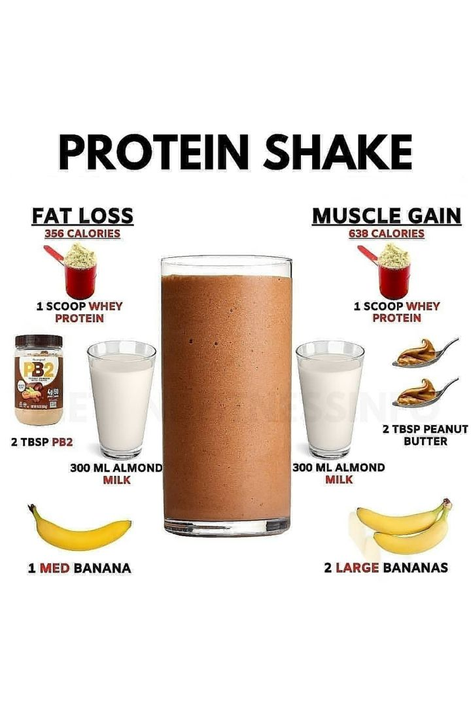

A protein bulking shake is a high-calorie, nutrient-dense liquid meal designed to support muscle growth and weight gain. It provides a fast, efficient way to consume a robust blend of macronutrients—proteins for muscle repair, carbohydrates for energy, and healthy fats for hormone production—without forcing you to eat oversized solid meals.
These shakes typically combine a quality protein powder (like whey or a plant-based blend) with calorie-rich whole foods. Common additions include rolled oats, peanut butter, and bananas, which collectively deliver 600 to over 1,000 calories per serving. This makes them an ideal post-workout recovery tool or a convenient daily supplement for achieving a consistent caloric surplus.